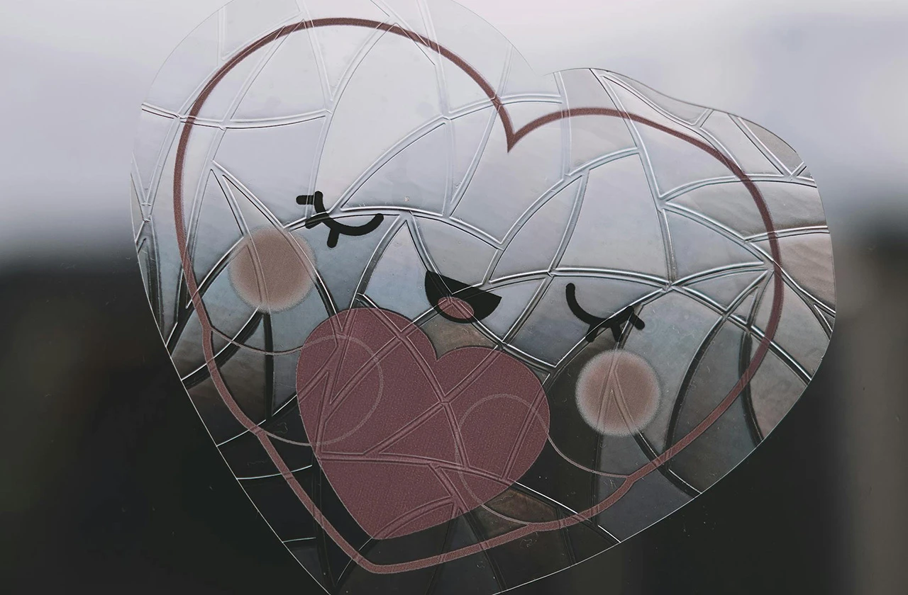
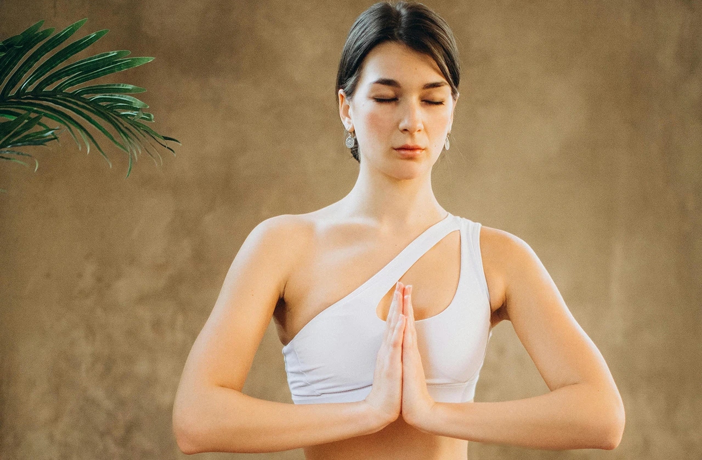

recent_actors個人簡介
我是綺綺，1988年出生，一直是一個熱愛學習與探索生命的人。過去的我性格溫順、習慣壓抑自己，總是努力配合他人與環境。
2019年第一個孩子誕生，成為我人生的重要轉折。母職帶來的責任與壓力，讓過去長期累積的情緒被放大，我開始經歷嚴重的產後憂鬱，身心狀態逐漸失衡。那段時間，我感到極度迷茫、疲憊，也對自我產生嚴重的懷疑。每天腦中彷彿戰爭一般，有許多聲音不斷拉扯，讓生活變得無比沉重與灰暗。
然而，母親的身份也讓我明白自己的存在對孩子而言非常重要。正是這份責任與愛，讓我沒有輕易放棄自己，也讓我開始尋找能重新理解自己、照顧內在的方法。這段生命經歷，成為我踏入身心靈學習與療癒道路的起點。
school學習與經歷
在人生最迷惘的時期，我偶然在社群平台接觸到「希塔療癒」這個工具。當時我對它幾乎一無所知，但因為有免費的體驗練習課程，我決定嘗試看看。正是這一次看似簡單的選擇，開啟了我生命的重要轉變。
隨著深入學習，我開始接觸潛意識轉化、情緒釋放、呼吸練習與冥想等多種身心調整方法。
透過這些工具，我逐漸理解情緒的來源，也學會看見內在深層的信念模式。當潛意識中的限制被清理，新的理解與力量便有機會被建立。這個過程不只是學習技巧，更是一段重新認識自己的旅程。
all_inclusive量子微觀世界
在身心靈學習的過程中，我也開始接觸到「量子」與「意識」相關的觀點。
量子物理告訴我們，世界在最微小的層面上其實充滿能量與可能性，而人的思想與意識，也會影響我們如何看待與經驗生活。從這個角度來看，內在信念與情緒不只是心理感受，也會影響我們做出的選擇與行動。當一個人的思維模式改變，生活的方向也會逐漸不同。透過覺察、冥想與潛意識轉化，我們能更有意識地理解自己的想法與習慣，並重新建立更支持生命的信念。
這並不是神祕的力量，而是一種重新認識自己與世界的方式。當內在意識變得清晰，人也更容易看見新的機會與可能。

spa回歸本質
在長時間的學習與實踐中，我逐漸理解到一件重要的事：真正的療癒，是回到本質的原廠設定。
每個人天生都具有感受愛、創造幸福與理解自己的能力，只是在成長過程中，許多信念、壓力與經驗逐漸磨滅了這些原來就有的力量。當我們開始練習覺察自己的想法、情緒與身體感受，便能慢慢看見那些影響生活的內在模式。透過理解與轉化，我們不再需要被困在過去的故事裡，而是能夠重新選擇自己的人生方向。
回歸本質並不是要去改變成另一個人，而是找回原本真實的自己。當內在變得清晰與穩定，生活也會出現新的可能。每一次願意看見自己、接納自己，都是向內在自由更靠近的一步。